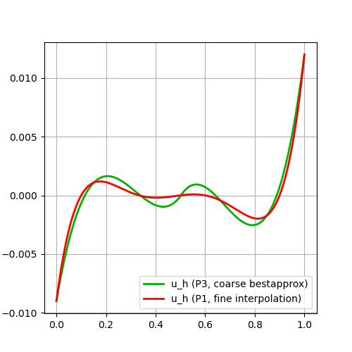

101 : L2-Bestapproximation 1D
This example computes the L2-bestapproximation of some given scalar-valued function into the piecewise quadratic continuous polynomials. Afterwards the L2 error is computed and the solution is plotted.
module Example101_Bestapproximation1D
using GradientRobustMultiPhysics
using ExtendableGrids
using GridVisualize
# define some (vector-valued) function (to be L2-bestapproximated in this example)
function exact_function!(result,x::Array{<:Real,1})
result[1] = (x[1]-1//2)*(x[1]-9//10)*(x[1]-1//3)*(x[1]-1//10)
end
# everything is wrapped in a main function
function main(; Plotter = nothing, verbosity = 0, h = 1e-1)
# set log level
set_verbosity(verbosity)
# generate mesh and uniform refine nrefs times
xgrid = simplexgrid(0:h:1)
# negotiate exact_function! to the package
user_function = DataFunction(exact_function!, [1,1]; name = "u", dependencies = "X", quadorder = 4)
# setup a bestapproximation problem via a predefined prototype
# and an L2ErrorEvaluator that can be used later to compute the L2 error
Problem = L2BestapproximationProblem(user_function; bestapprox_boundary_regions = [1,2])
L2ErrorEvaluator = L2ErrorIntegrator(Float64, user_function, Identity)
# choose some finite element type and generate a FESpace for the grid
# (here it is a one-dimensional H1-conforming P2 element H1P2{1,1})
# the broken switch toggles a broken dofmap
FEType = H1P2{1,1}
FES = FESpace{FEType}(xgrid)
# generate a solution vector and solve the problem
# (the verbosity argument that many functions have steers the talkativity,
# the larger the number, the more details)
Solution = FEVector{Float64}("u_h",FES)
solve!(Solution, Problem)
# calculate the L2 error
L2error = sqrt(evaluate(L2ErrorEvaluator,Solution[1]))
println("\t|| u - u_h || = $L2error")
# to compare our discrete solution with a finer one, we interpolate the exact function
# again on some finer mesh and also compute the L2 error on this one
h = h/10
xgrid_fine = simplexgrid(0:h:1)
FES_fine = FESpace{FEType}(xgrid_fine)
Interpolation = FEVector{Float64}("u_h (fine)",FES_fine)
interpolate!(Interpolation[1], ON_CELLS, user_function)
println("\t|| u - u_h (fine) ||= $(sqrt(evaluate(L2ErrorEvaluator,Interpolation[1])))")
# evaluate/interpolate function at nodes and plot
if Plotter != nothing
nodevals = zeros(Float64,1,size(xgrid[Coordinates],2))
nodevalues!(nodevals,Solution[1],FES)
p=GridVisualizer(Plotter=Plotter,layout=(1,1))
scalarplot!(p[1,1],xgrid, nodevals[1,:], color=(0,1,0), label = "coarse approximation")
nodevals_fine = zeros(Float64,1,size(xgrid_fine[Coordinates],2))
nodevalues!(nodevals_fine,Interpolation[1],FES_fine)
scalarplot!(p[1,1],xgrid_fine, nodevals_fine[1,:], clear = false, color = (1,0,0), label = "fine interpolation",show=true)
end
end
endThis page was generated using Literate.jl.
Default output:
julia> Example101_Bestapproximation1D.main()
|| u - u_h || = 3.944249709670143e-5
|| u - u_h (fine) ||= 4.025193150126114e-8